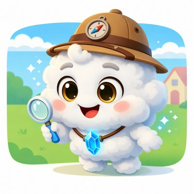
One question a day, one imagination a day.
A 7-day adventure where thinking grows.
Name Age
Even better together with a grown-up 💛
© Mongle Kids. Unauthorized copying & distribution prohibited.
Read one little story each day and let your thoughts unfold. Observe, imagine, explore, make and tell — and grow your very own creativity!
Day 1 · No bridge? — Problem-solving + Buoyancy
Day 2 · Cloud in a bag? — Senses + State change
Day 3 · Animal talk — Empathy + Communication
Day 4 · Living shadow — Imagination + Light
Day 5 · Catch the wind — Invention + Aerodynamics
Day 6 · Slow time — Perspective + Speed
Day 7 · Starry Night — Art + Emotion
Day 8 · Korea Special — The Dancing Mask
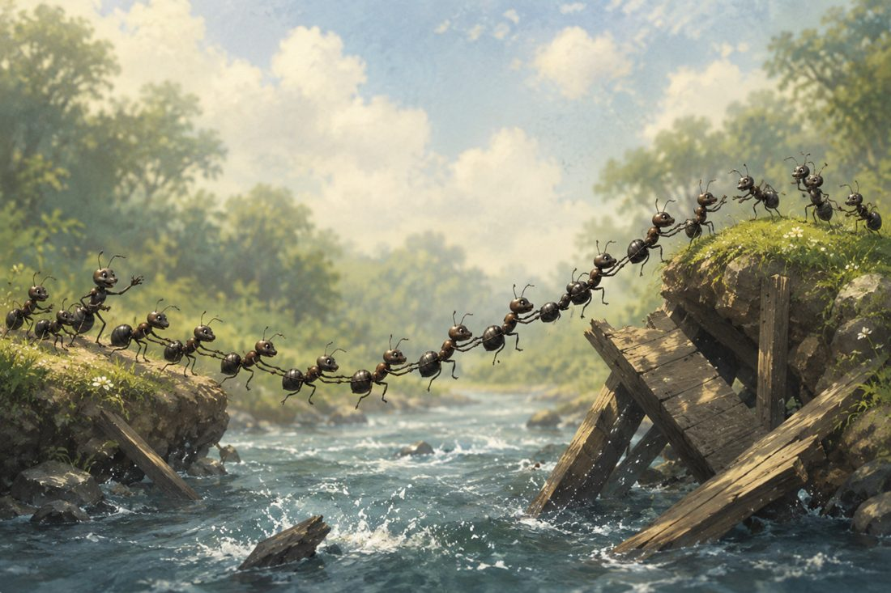
Moong wanted to visit a friend, but the bridge over the river had collapsed. Moong stared at the water. “Is there another way?”
STEP 1. Circle the materials you'll use (pick a few!)
STEP 2. Combine them and design your machine!
Moong looked up at the fluffy clouds. “What if I could touch that cloud? Could I keep one in a bag?”
Fluffy ▢▢▢▢▢ Cold ▢▢▢▢▢ Heavy ▢▢▢▢▢
Bag name · Price · Slogan
Design the 3 sides — add buttons, pockets, gauges and name them.
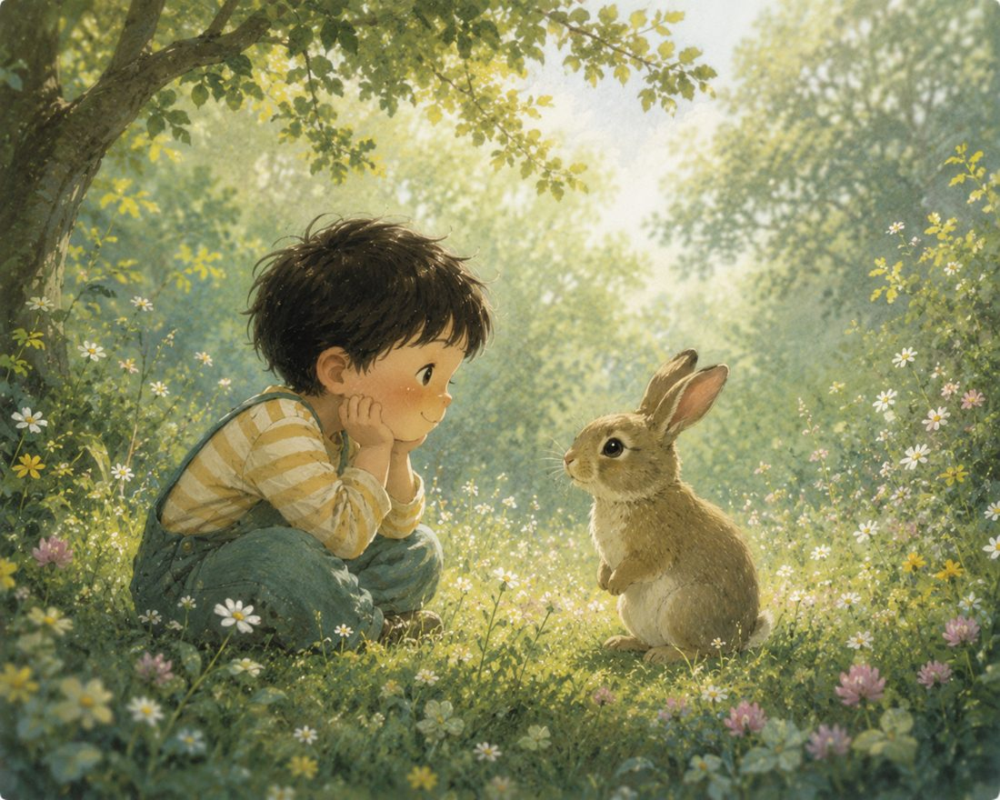
Tori met a little rabbit in the forest. It said nothing, but kept looking and sniffing. “What is it trying to say?”
sniffs its nose?
thumps its feet?
perks its ears?
Draw an animal, circle its feeling ( 😊 😢 😠 ), and write what it wants to say.
One evening, Lumi's shadow began to move on its own — and waved! “What does the shadow want to do?”
Name · Personality
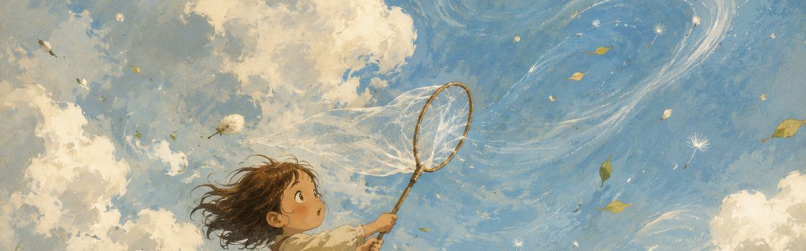
A strong wind blew Lumi's hat away. She reached out, but the wind slipped through her fingers. “Can you catch something invisible?”
leaves shaking · hair flying · flag fluttering · balloon drifting
Gathers by
Stores by · Releases by
STEP 1. Circle the parts
STEP 2. Draw the machine & show the wind's path with arrows 💨→→→ ⚡
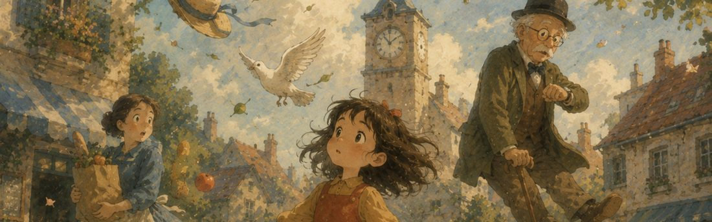
One morning, everything moved very slowly. Only Lumi moved at normal speed. “If time slowed, what would you do?”
In a slow world I want to because usually .
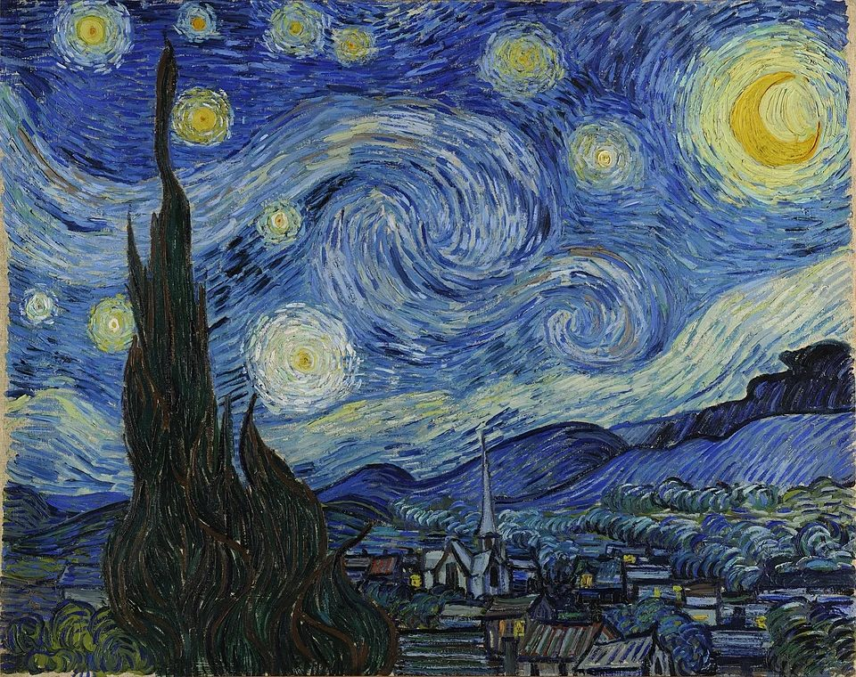
Moong looked up at the twinkling night sky. “Why does the sky in his painting swirl?”
swirling sky · big bright stars · crescent moon · pointy cypress tree · quiet village
He sold only one painting in his life — now he's one of the world's most-loved painters!
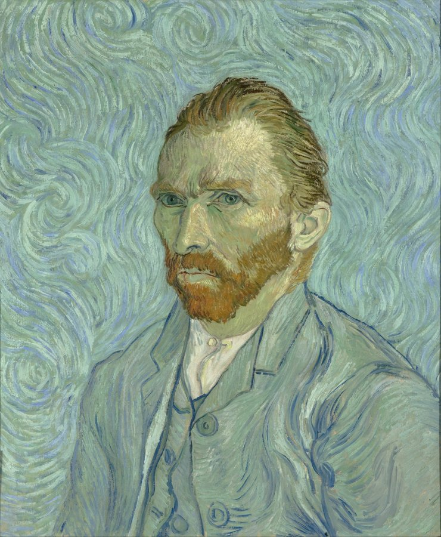
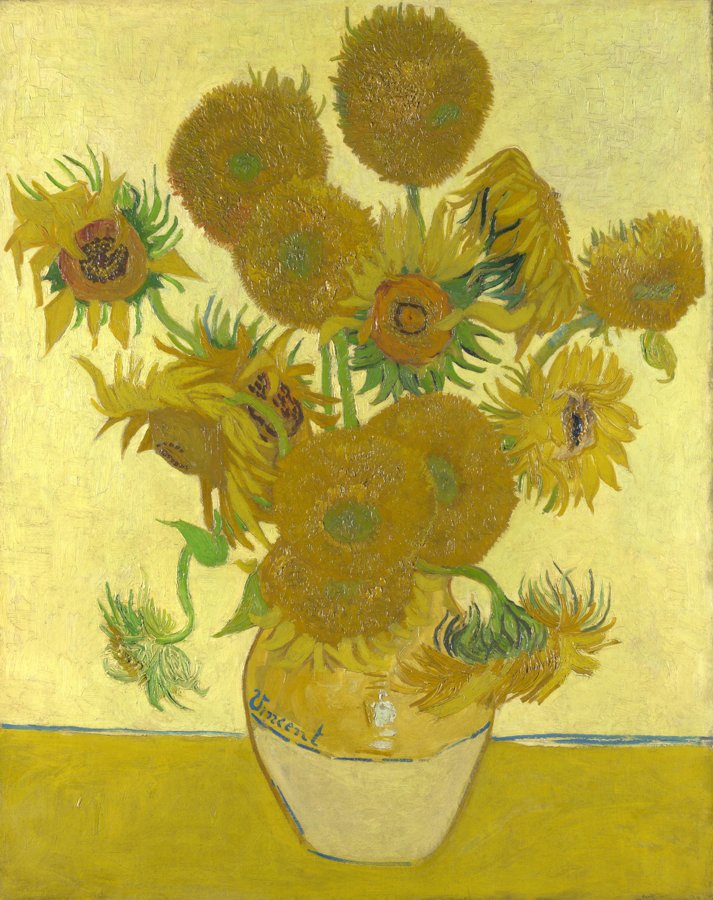
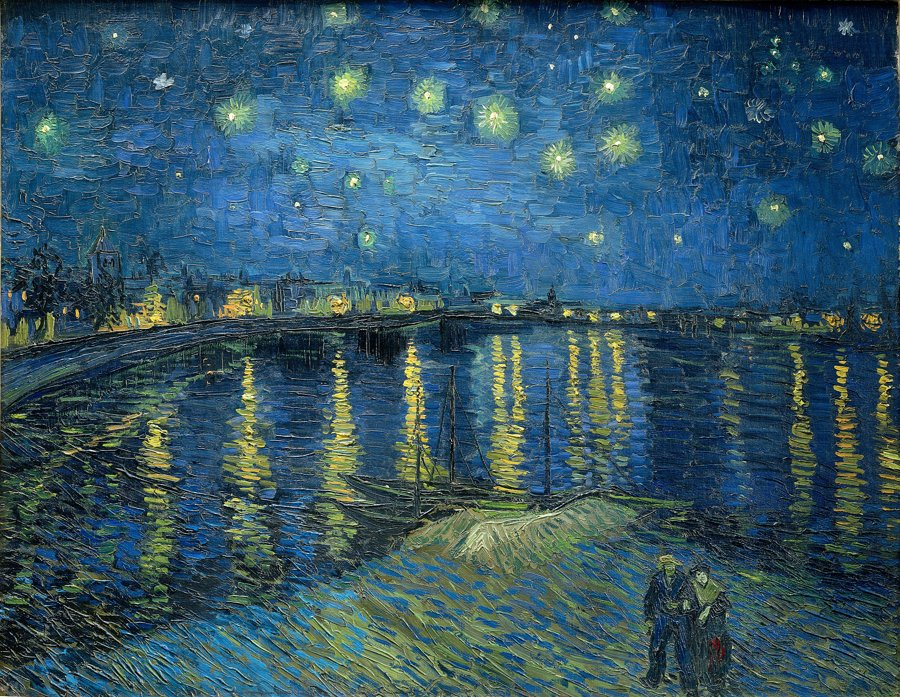
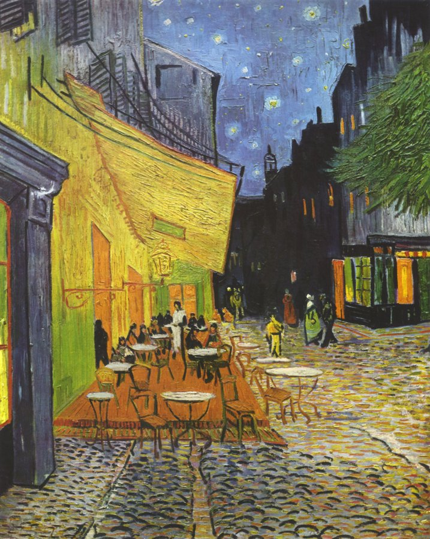
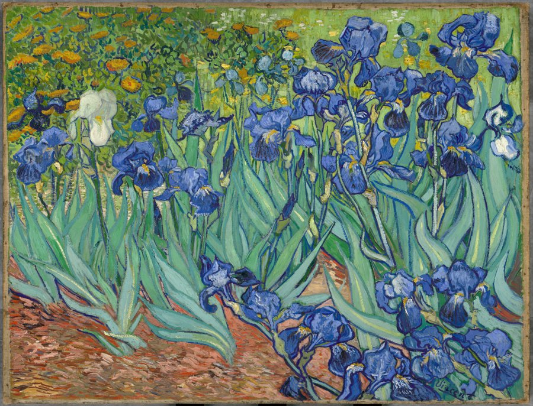
“Dear Mr. Van Gogh, when I look at Starry Night I feel because .”
Fill the page with swirls and shining stars — your very own starry night.
Every day you asked, imagined, and made something. All of these thoughts are your very own treasure.
My favorite mission was
wonderfully completed the 7-Day Creative Mission with Moong!
Date
Moong found an old wooden mask in a Korean village. When the drums played — dung, dung! — the mask began to smile… and dance! “Every Korean mask has its own face and feeling. What would YOUR mask feel?”
Name · Feeling
The story it dances:
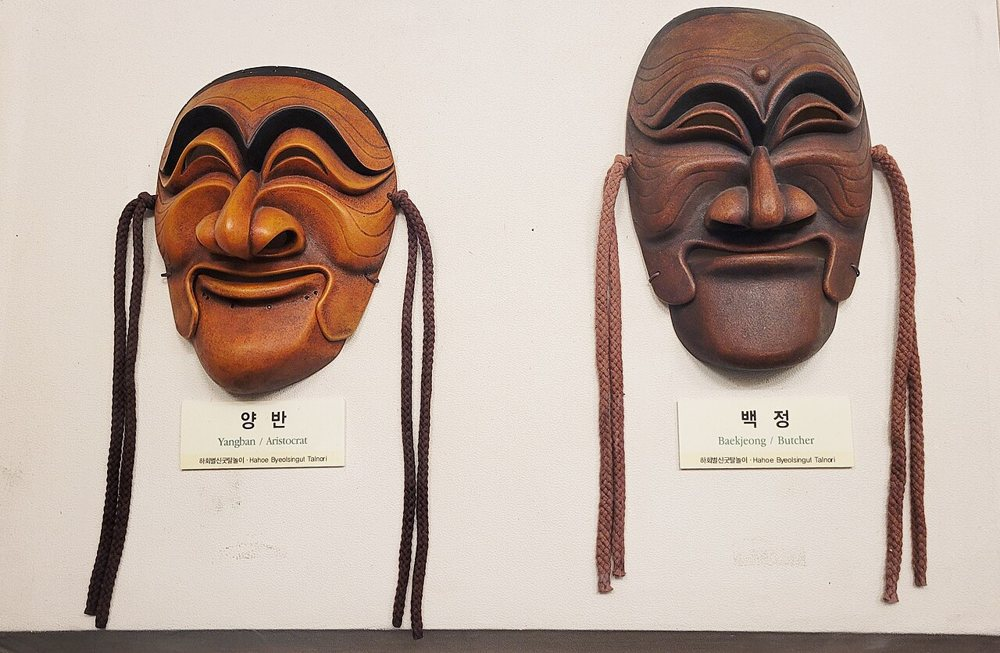
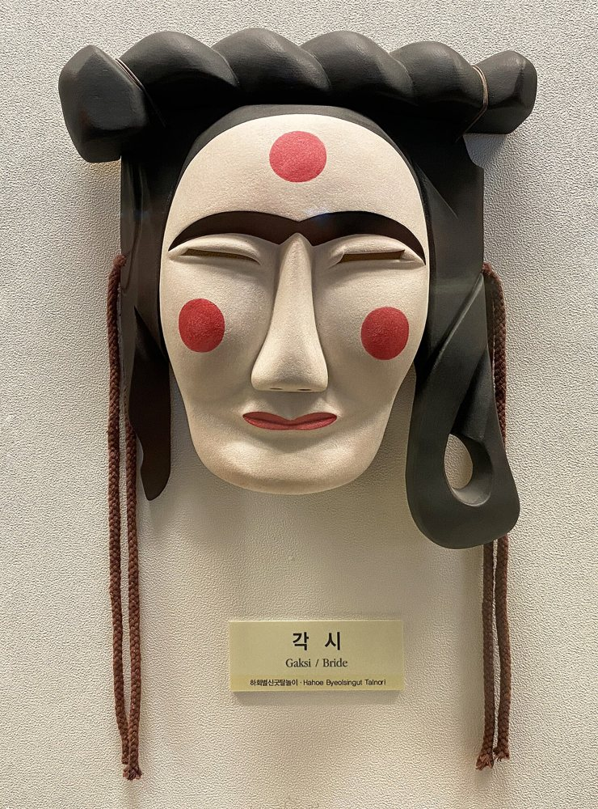
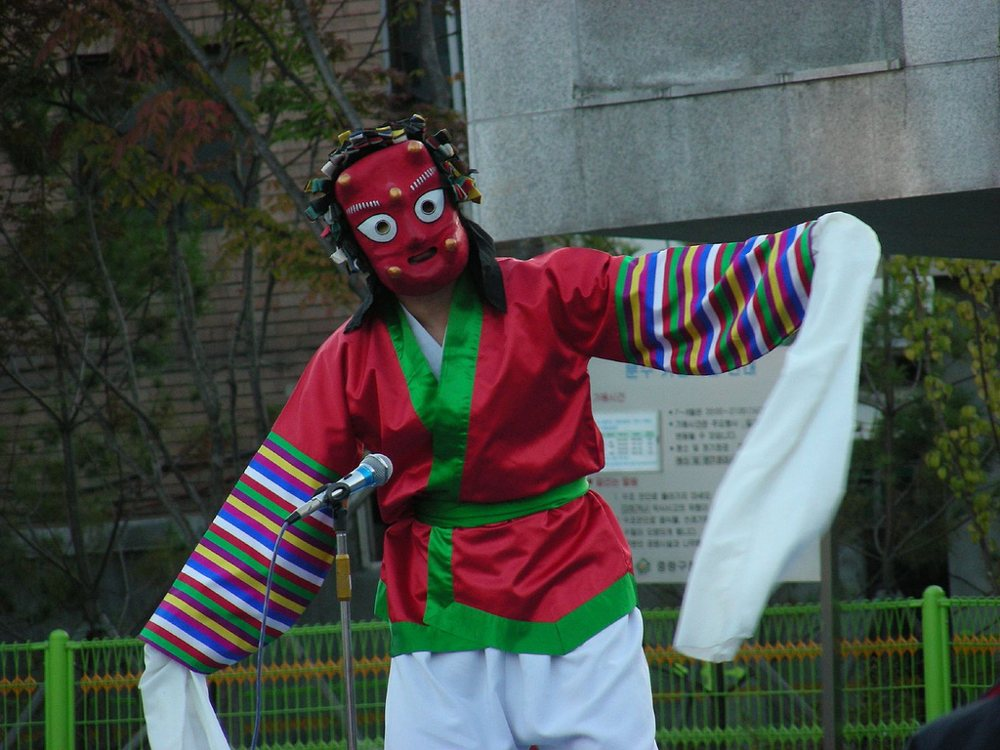
Give your mask big eyes, a mouth, eyebrows & bright patterns. Choose colors that match its feeling — then color it in!
This book was just a taste. In the Mongle Kids app, AI Moong keeps the imagination going.
Early supporter: be first to try AI Moong, tailored missions & growth reports at launch. 💛